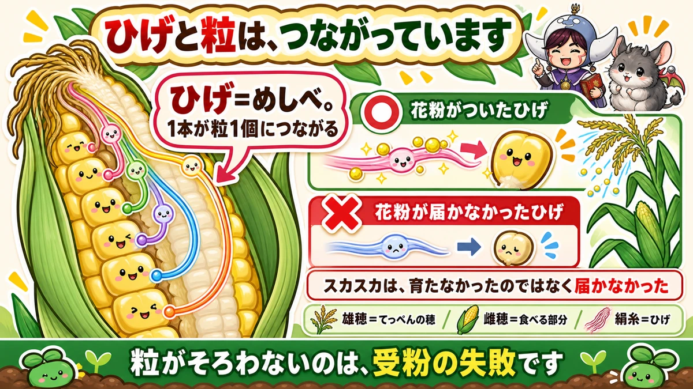
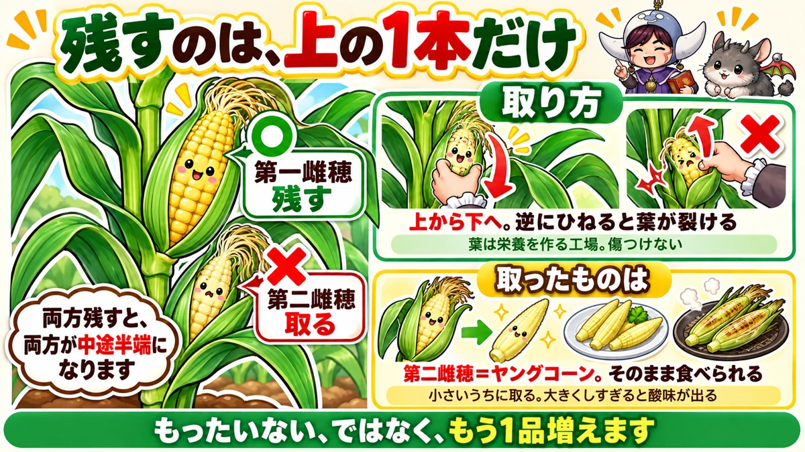
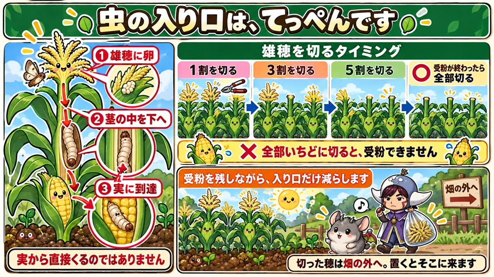

ひげ1本が、粒1個です🌽 スカスカは受粉の失敗でした
🌽「皮をむいたら、粒がスカスカだった」
🌽「実の中に虫が入っていた」
🌽「1本の株から、何本も穫れないの？」
どうも、8150（えいこう）です🌱 家庭菜園歴8年、理科の教員免許を持っていて、有機・無農薬で野菜を育てています。
前回はピーマンの話でした。今日はとうもろこしです。
先に、この記事でいちばん言いたいことを言っておきますね。
とうもろこしのひげは、1本が粒1個につながっています。
だから粒がスカスカなのは、育て方ではなく受粉の失敗です。ここが分かると、対策が一気にはっきりします☺️
まず、とうもろこしの基本データ
3つだけ押さえてください
- 科：イネ科（連作に強い。むしろ他の野菜の前に作ると土がよくなります）
- タネまき：4月〜5月（直まきでもポットでもOK）
- 植え付け：5月（ポット苗なら本葉3〜4枚のころ）
※時期は中間地（関東〜関西の平野部）が目安。寒い地域は少し遅らせ、暖かい地域は早めに。
📖 この記事の目次
株間30cm、そして2列以上
株間は30cm、列と列のあいだは40〜50cmです。
そして、ここがとうもろこしだけの特別なルールです。
1列に並べて植えてはいけません。必ず2列以上にしてください。
理由はこのあとすぐ説明します。畑が細長くて1列しか取れない場合は、短い2列に折り返してください。そのほうが確実に穫れます。
粒がそろわないのは、受粉の失敗です

ひげは、粒につながっています
まず用語を整理させてください。3つだけです。
- てっぺんの穂＝雄穂（ゆうすい）。ここから花粉が出ます
- 食べる部分＝雌穂（しすい）
- そこから出ているひげ＝絹糸（けんし）
そしてここが今日いちばん面白いところ。
ひげ1本1本が、粒1個ずつにつながっています。
つまり花粉がついたひげの分だけ、粒ができます。
スカスカのとうもろこしは、粒が「育たなかった」のではありません。そこのひげに、花粉が届かなかっただけです。
自分の花粉では、実りません
もうひとつ大事なこと。とうもろこしは他家受粉です。
トマトは自分の花粉で実ります（自家受粉）。でもとうもろこしは、別の株の花粉でないとうまく実りません。
しかも風媒花です。風が花粉を運びます。ちなみにスイカやかぼちゃは虫が運ぶので虫媒花。運び屋が違うわけですね。
だから1列だとだめ
ここで話がつながります。
1列に並べると、風が吹いたとき花粉は列の外へ飛んでいくだけです。
2列以上あれば、隣の列に落ちます。だから2列。とうもろこしだけの決まりごとです。
私は1年目、畑のはしに1列だけ植えました。りっぱに育って、皮をむいたら粒が三分の一しかありませんでした😅 あれは今でも覚えています。
心配なら、人工授粉
天気が悪くて風がない年もあります。そういうときは手伝ってあげてください。
- 雄穂を切り取る
- ひげの上でパラパラと振る
これだけです。花粉がいちばん出るのは、穂が開いて、まだ全体が黄色くなりきっていないころ。
朝のうちにやると、花粉がよく落ちます。
1株から穫るのは、1本です

上を残して、下は取る
株をよく見ると、実が2つついていることがあります。
- 上のほう＝第一雌穂
- 下のほう＝第二雌穂
残すのは、上です。下は取ってください。
「2本穫れたほうが得では？」と思いますよね。私も最初そう思いました。でも両方残すと、両方が中途半端になります。
上に集中させると、粒がぎっしり詰まって甘くなります。
取り方は、上から下へ
取るときは上から下へ向けてもぎ取ります。
下から上へひねると、葉が裂けることがあります。葉は栄養を作る工場なので、なるべく傷つけたくありません。
取ったものが、ヤングコーンです
そして、ここがうれしいところ。
取った第二雌穂が、ヤングコーンです。直売所で売っているあれですね。
そのまま食べられます。皮ごと焼いてもおいしいです。小さいうちに取るのがコツで、大きくしすぎると酸味が出ます。
「もったいない」ではなく「もう1品増えた」と思ってください☺️
アワノメイガは、上の穂から入ってきます

入り口は、実ではありません
とうもろこし最大の敵がアワノメイガです。皮をむいたら虫がいた、あの犯人です。
多くの方が「実に直接くる」と思っています。違います。
- まず雄穂に卵を産みます
- 幼虫は茎の中に入って、下へ食べ進みます
- 最後に実に到達します
甘い茎をたどって降りてくるわけです。発生は6月から8月、年に2回ほど。
だから、雄穂を切ります
入り口が分かれば、対策は単純です。雄穂を切ってしまえばいい。
ただし、ここで問題が起きます。雄穂は花粉を出す場所です。全部切ったら受粉できません。
段階的に切るのがコツ
そこで農家さんがやっている方法です。
- まず全体の1割だけ切る
- 次に3割
- 次に5割
- そして受粉が終わったら、残りを全部切る
こうすると、花粉を出す株を残しながら、アワノメイガの入り口を減らしていけます。受粉と防除の両立です。
とうもろこしは風媒花なので、一部の株が花粉を出していれば、畑全体に行き渡ります。ここがありがたいところですね。
切った穂は、畑の外へ
見落としやすい一手です。
切った雄穂を、その辺に置いておかないでください。
そこにもアワノメイガは来ます。畑から離れた場所に捨てるか、埋めてください。私は袋に入れて持ち帰っています。
迷いやすいところ、2つ
株元の脇芽は、取らなくていい
株元から細い芽が出てきます。分けつ（ぶんけつ）といいます。
昔は「取るべき」と言われていました。今は、取らなくていいという考え方になっています。
体を支える役目もありますし、取る手間のわりに差が出ません。放っておいて大丈夫です。
倒れても、たいてい起き上がります
背が高いので、風で倒れるとびっくりします。
でもとうもろこしは倒れても起き上がる性質があります。肥料が効いていて茎が太ければ、数日で持ち直します。
心配な方は、隣どうしをひもで軽く結んでおくといいです。あわてて起こして根を切るほうが、よくありません。
学ぶ：ひげは、めしべの一部です🔬
あの長さには意味があります
なぜひげは、あんなに長いのか。
あれは、めしべが伸びたものです。
粒になる部分ひとつひとつから、めしべが1本ずつ伸びて、皮の外まで顔を出しています。外に出ないと、風が運ぶ花粉を受け取れないからです。
だから1対1で対応する
ここまで来ると、最初の話につながります。
ひげ1本＝粒1個。これは「そういう決まり」ではなく、めしべと実の関係そのものです。
花粉がついたひげは、その先の粒をふくらませます。つかなかったひげの粒は、そのまま小さく残ります。
実物で確かめられます
これ、収穫したその場で確かめられます。
皮をむいて、ひげの本数と粒の数を見比べてみてください。ひげは粒の1つ1つから出ています。
お子さんと一緒なら、ひげを1本引っぱってみると分かりやすいです。どの粒とつながっているかが見えます。理屈より、この1回のほうが残ります☺️
まとめ
ここまで読んでくださって、ありがとうございます！
- とうもろこしはイネ科。株間30cm、列間40〜50cm
- 1列で植えない。必ず2列以上
- 他家受粉で風媒花。別の株の花粉が要る
- ひげ1本が粒1個。スカスカは受粉の失敗
- 心配なら人工授粉。雄穂を切ってひげの上で振る
- 実は上の1本だけ残す。下は取る
- 取り方は上から下へ。取ったものがヤングコーン
- アワノメイガは雄穂から入り、茎を降りて実に届く
- 雄穂は1割→3割→5割と段階的に切る
- 受粉が終わったら全部切る
- 切った穂は畑の外へ出す
- 株元の分けつは取らなくていい
- 倒れても起き上がる。あわてて起こさない
全部やろうとしなくて大丈夫です。まずは来年の植え方だけ、2列に変えてみてください。それだけで粒のそろい方が変わります🌽
次回は、枝豆の話です。収穫の時期が「1日単位」で決まる野菜のお話をします
とうもろこしのタネ
2列でまくのが受粉の条件です。1列だと粒が飛びます。まとまった量があるほうが確実です。
![[商品価格に関しましては、リンクが作成された時点と現時点で情報が変更されている場合がございます。]](https://hbb.afl.rakuten.co.jp/hgb/56eb99ba.ba083ff3.56eb99bb.e7e05161/?me_id=1436583&item_id=10000119&pc=https%3A%2F%2Fthumbnail.image.rakuten.co.jp%2F%400_mall%2Fyamatonoen%2Fcabinet%2F12534367%2F12597951%2F12597952%2Fimgrc0136347570.jpg%3F_ex%3D240x240&s=240x240&t=picttext "[商品価格に関しましては、リンクが作成された時点と現時点で情報が変更されている場合がございます。]")

防虫ネット
アワノメイガは雄穂から入ってきます。穂が出る前にかけておくと、ずいぶん違います。
![[商品価格に関しましては、リンクが作成された時点と現時点で情報が変更されている場合がございます。]](https://hbb.afl.rakuten.co.jp/hgb/56bc205d.0066fedc.56bc205e.af56d163/?me_id=1260467&item_id=10000299&pc=https%3A%2F%2Fthumbnail.image.rakuten.co.jp%2F%400_mall%2Fmarsol-morishita%2Fcabinet%2Fshouhinn%2Fbouchuu%2Fimgrc0090950099.jpg%3F_ex%3D240x240&s=240x240&t=picttext "[商品価格に関しましては、リンクが作成された時点と現時点で情報が変更されている場合がございます。]")
炭化鶏ふん
とうもろこしは肥料を多く使う野菜です。うね作りのときに元肥をしっかり入れておきます。
![[商品価格に関しましては、リンクが作成された時点と現時点で情報が変更されている場合がございます。]](https://hbb.afl.rakuten.co.jp/hgb/55e7612a.7de1526b.55e7612b.01a50904/?me_id=1214866&item_id=10002182&pc=https%3A%2F%2Fthumbnail.image.rakuten.co.jp%2F%400_mall%2Fkaju%2Fcabinet%2F00714580%2F03462454%2F07486601%2Fimgrc0071643813.jpg%3F_ex%3D240x240&s=240x240&t=picttext "[商品価格に関しましては、リンクが作成された時点と現時点で情報が変更されている場合がございます。]")
あわせて読みたい